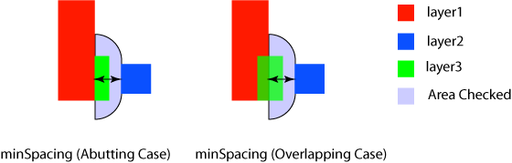

|
 |
 |
||||||
|
|
|
||||||
The built-in layer array constraint oacMinTouchingDirectionClearance specifies a clearance between layer1 and layer2 that applies only in the direction normal to the layer1 edge that is touched by a third layer. Touching is defined as either abutting of the third layer with layer1 or overlapping of layer1 by the third layer. The clearance is between the layer1 edge that touches the third layer shape and adjacent layer2 shapes. See the figure below for an illustration of how this clearance is defined with respect to the shapes on three layers.
| Constraint type: | oaLayerArrayConstraint (Number of layers: 3) |
| Value types: | oaIntValue, oaDualIntValue |
| Database types: | oaDesign, oaTech |
| Object types: | oaAppObject |
The following value types are supported by this constraint:
This value is used to specify the clearance.
Units: DBU
If an oaDualIntValue is used to specify the clearance, the distance must be measured as Manhattan. In this case, the first number of the pair describes the required clearance normal to the touching edge, and the second number describes the required clearance as parallel to the touching edge.
Units: DBU
The following parameters are supported by this constraint:
| Name | Value Type | Units | Default | Description | ||||||
|---|---|---|---|---|---|---|---|---|---|---|
| distanceMeasureType oacDistanceMeasureTypeConstraintParamType |
oaIntValue | Enum | euclidian |
oacDistanceMeasureTypeConstraintParamType is the distance measure type, which determines whether the spacing specified in the values of the constraint are a Euclidian or Manhattan metric. The allowed value type for this parameter is an oaIntValue, and the allowed values are represented in oaDistanceMeasureTypeEnum. This parameter is represented by an oaDistanceMeasureType enumeration:
|

This constraint can be used to specify the clearance between poly and gate in the direction of the channel.
Copyright 2002 - 2010 Cadence Design Systems, Inc.
All rights reserved.